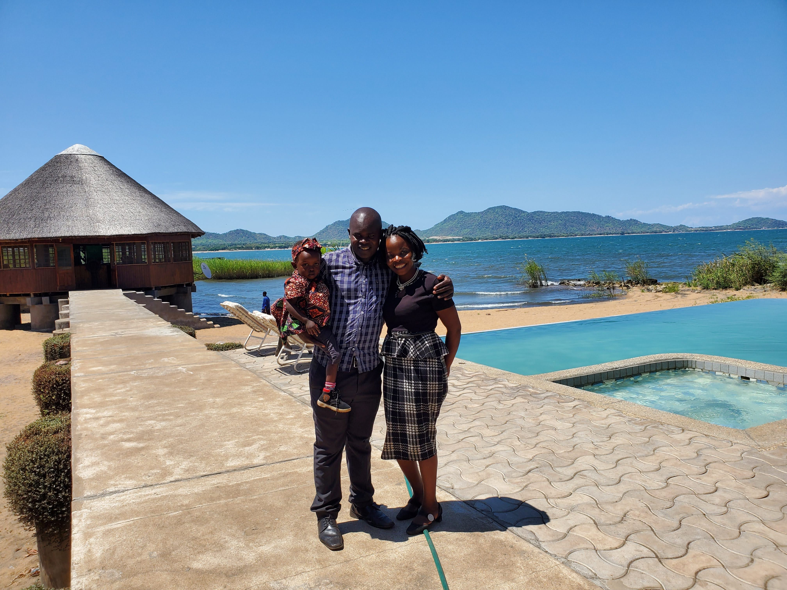
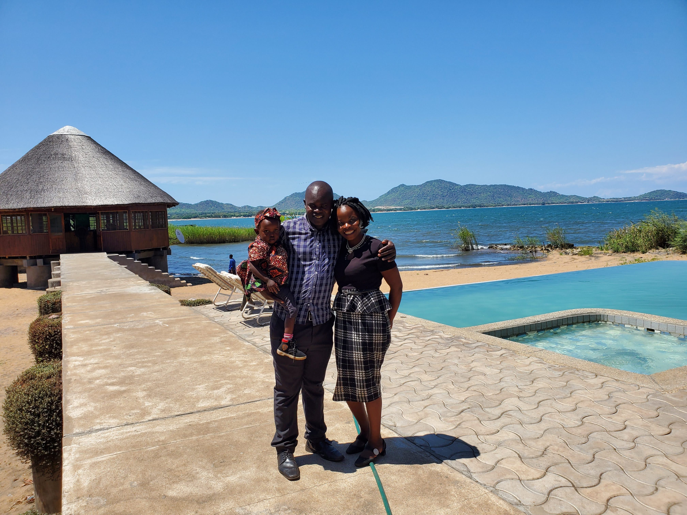

Overview
Purpose
My Purpose is to tell of a country that is unpopular called Malawi or (The Warm Heart Of Africa). I want to make it known to the whole world for everyone to know how beutiful the county is.
Audience
All classmates and friends of all ages should know of this beutiful place.
Branding
Website Logo
Style Guide
lake
 

Lake Malawi Lake Malawi is one of the defining natural features in the country flowing from the southern to the northern region. It is the worlds eighth largest freshwater lake and Africa third largest lake. It is a big contributor to Malawi tourism. Holding variety of beaches where tourists can visit.